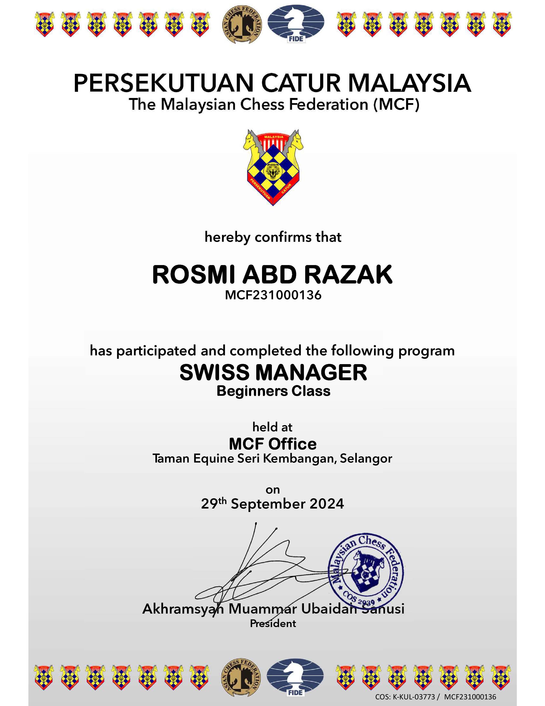

PROFILE
Chess trainer and tournament arbiter, certified as an MCF National Trainer. Originally from Rembau, Negeri Sembilan, and now staying in Cyberjaya, Selangor, Malaysia. Currently balancing a career at a government agency with part-time chess training and a Computer Science degree.
- International Chess Federation Identification (FIDE ID): 5790999
- The Malaysian Chess Federation Identification (MCF ID): MCF231000136
- Completed Train-The-Trainer and Coach Seminar, certified as NT (National Trainer) and approved by The Malaysian Chess Federation (view announcement)
SKILLS
- Basic principles of chess opening
- Focus on chess education
- Experience in tournament arbitration
- Basic knowledge of Swiss Manager
ACHIEVEMENTS
- Champion, Kejohanan Catur SMT Port Dickson 2001
- Certified MCF National Trainer (Level 1), December 2023
- Represented the Suruhanjaya Perkhidmatan Pelajaran (SPP) at MAKSWIP 2010
- Represented MOT at MAKSWIP 2026
EXPERIENCE
Chess Trainer, Traju Chess Centre, Putrajaya
- Trains beginner level players.
- Classes on Wednesday, Thursday and Friday, 8.00pm till 9.30pm.

IT Human Resources / Programmer, Government Agency
- Works in IT for a government agency, supporting Human Resources.
Tournament Arbiter and Secretariat Logistic
- Official at national and state level chess tournaments since 2018 (see Engagement History).
CERTIFICATE
National Trainer (Level 1), The Malaysian Chess Federation. Effective December 2023.

Click the image to open the full certificate (PDF).
Swiss Manager (Beginners Class), The Malaysian Chess Federation. Effective September 2024.

Click the image to open the full certificate (PDF).
EDUCATIONAL ATTAINMENT
- Currently pursuing a Bachelor's Degree in Computer Science (Honors), Universiti Teknologi MARA (UiTM) Shah Alam, Selangor.
- Graduated with a Diploma in Computer Science, Universiti Teknologi MARA (UiTM) Dungun, Terengganu.
- Sekolah Menengah Teknik Port Dickson (SMTPD), Negeri Sembilan - Kejuruteraan Mekanikal.
- Sekolah Menengah Kebangsaan Undang Rembau (URESS), Negeri Sembilan.
ENGAGEMENT HISTORY
| Event | Role |
|---|---|
| Kejohanan Catur SMT Port Dickson 2001 | Player / Champion |
| Kejohanan Catur MAKSWIP 2010 - Wakil Suruhanjaya Perkhidmatan Pelajaran (SPP) | Player |
| Kejohanan Catur Terbuka Ampang Aidilfitri 2010 Anjuran Bersama Chess Club@Ampang & Cerdik Catur | Player |
| Kejohanan Catur Terbuka Universiti Pendidikan Sultan Idris (UPSI) 2010 | Player |
| Kejohanan Catur - Cabaran Cerdik Catur Kali Ke-2 Tahun 2011 | Player |
| Chess Championship 2017 Sempena Hari Sukan Negara | Player |
| Pertandingan Catur Kelab Kebajikan Dan Rekreasi Bahagian Akaun, Kementerian Pendidikan Malaysia (KPM) 2018 | Arbiter |
| Pertandingan Catur SRAIBBB 2018 | Arbiter |
| Pertandingan Catur Hari Sukan Negara Di KBS 2018 | Secretariat Logistic |
| Kejohanan Catur Terbuka Putrajaya Sempena Hari Sukan Negara 2023 Di Menara KBS, Putrajaya | Arbiter / Secretariat Logistic |
| Pemilihan Sukan Malaysia (SUKMA) Sukan Catur Peringkat Wilayah Persekutuan Putrajaya C1 - Lelaki Tahun 2023 | Arbiter / Secretariat Logistic |
| Pemilihan Sukan Malaysia (SUKMA) Sukan Catur Peringkat Wilayah Persekutuan Putrajaya C4 - Wanita Tahun 2023 | Arbiter / Secretariat Logistic |
| Pertandingan Catur Kebangsaan di Putrajaya Sempena Hari Sukan Negara 2024 | Arbiter / Secretariat Logistic |
| Kejohanan Catur MADANI Piala Parlimen Bangi 2024 | Arbiter / Secretariat Logistic |
| Kejohanan MAKSWIP 2026 | Player represent MOT |
| Pertandingan Catur Kementerian Pertanian dan Keterjaminan Makanan (KPKM) Sempena Hari Sukan Negara 2026 | Arbiter / Secretariat Logistic |